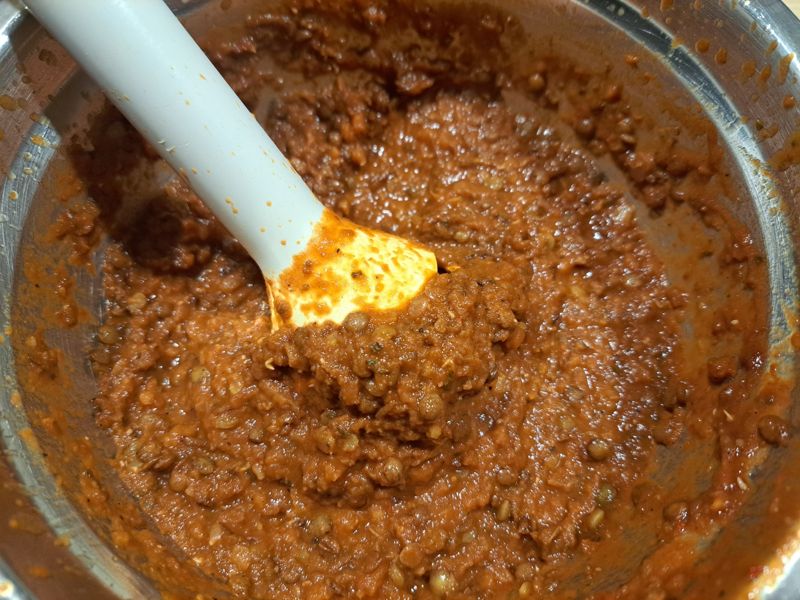

Lentil Bolognese Sauce

Instructions
1
Sauté aromatics
Sauté the onions and garlic until softened.
2
Sweat lentils
Add the lentils, carrots, aromatic herbs and spices. Sweat for 2 minutes over low heat, stirring regularly.
3
Deglaze
Deglaze with the red wine and allow to absorb (approx. 1 minute).
4
Add tomatoes
Add the crushed tomatoes and the tomato paste diluted in the water.
5
Simmer
Season, then simmer over low heat for approximately 40 minutes (check lentil doneness).
6
Adjust water
Add water as needed during cooking.
7
Finish and blend
At the end of cooking, blend lightly to reach the desired texture.